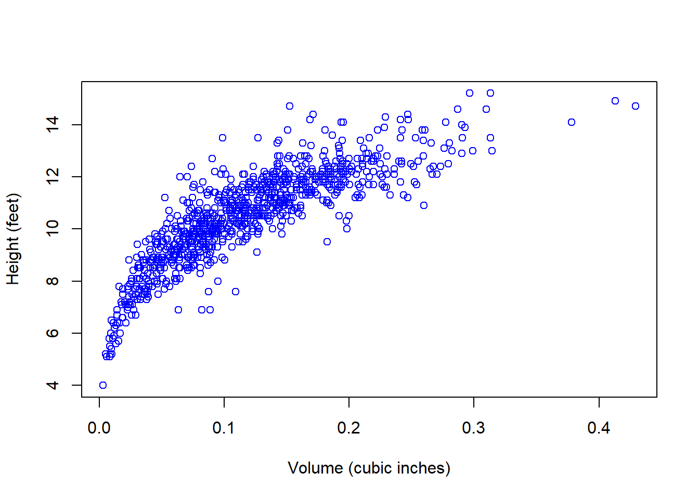
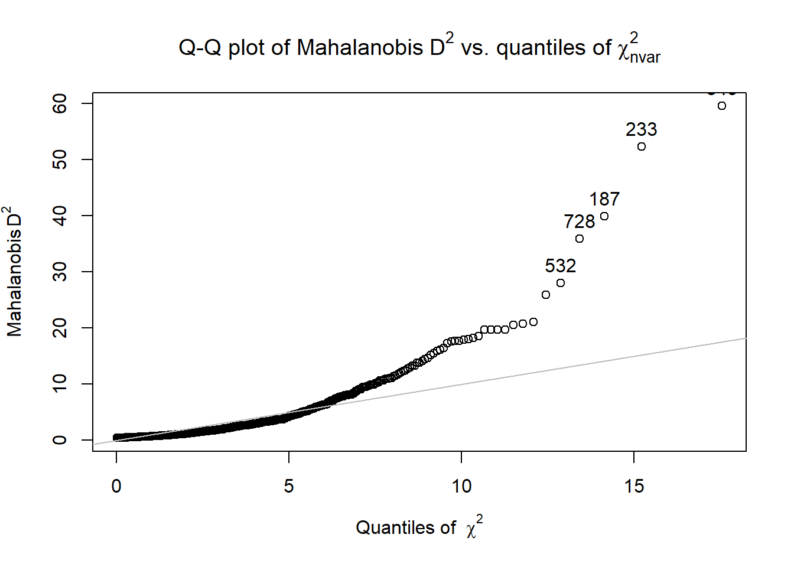
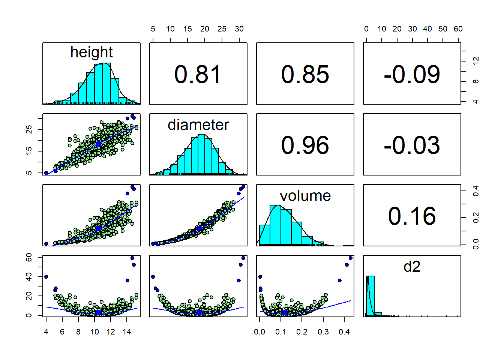
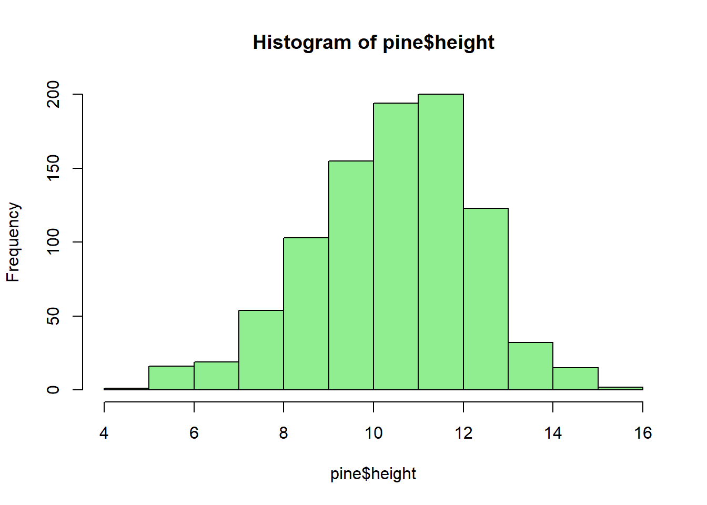
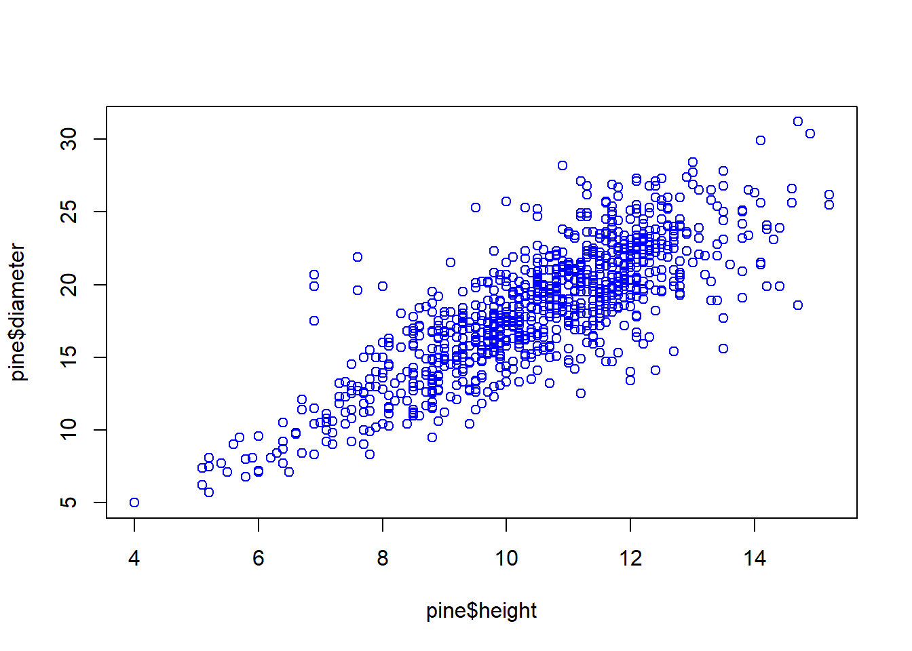
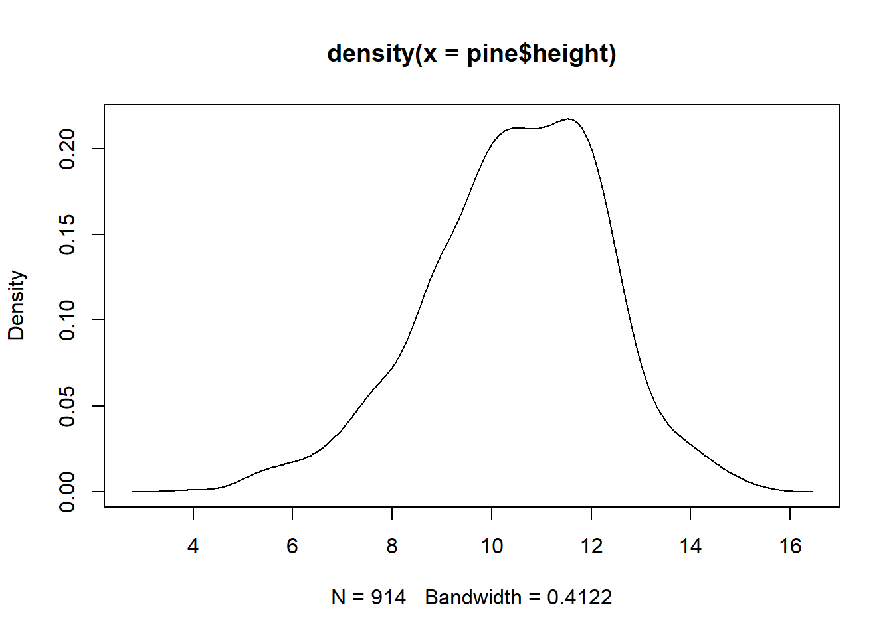
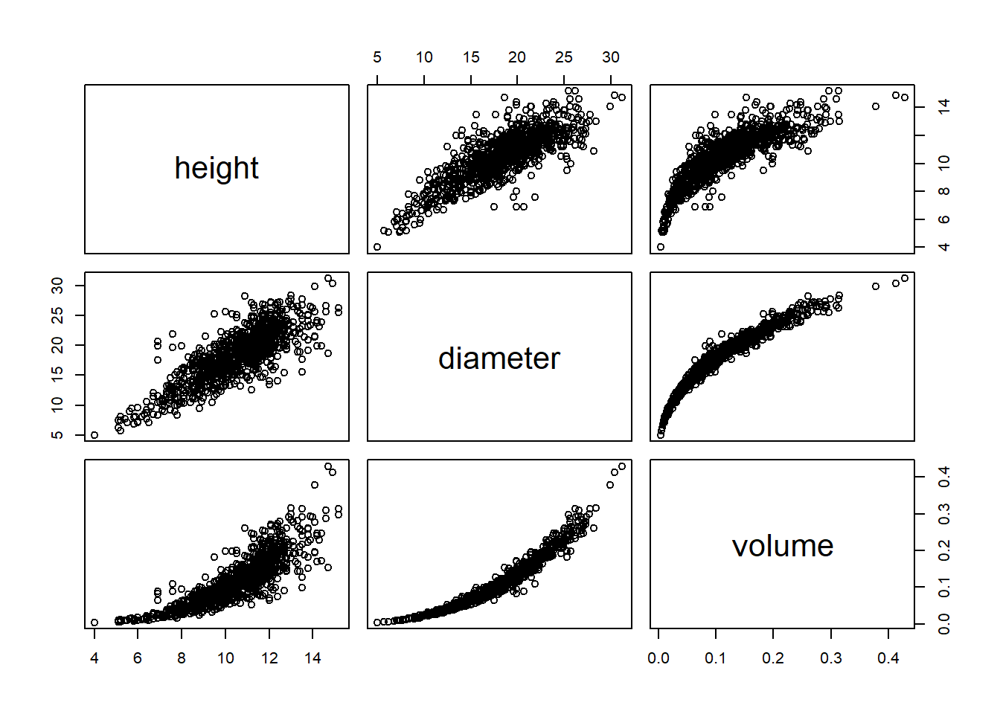
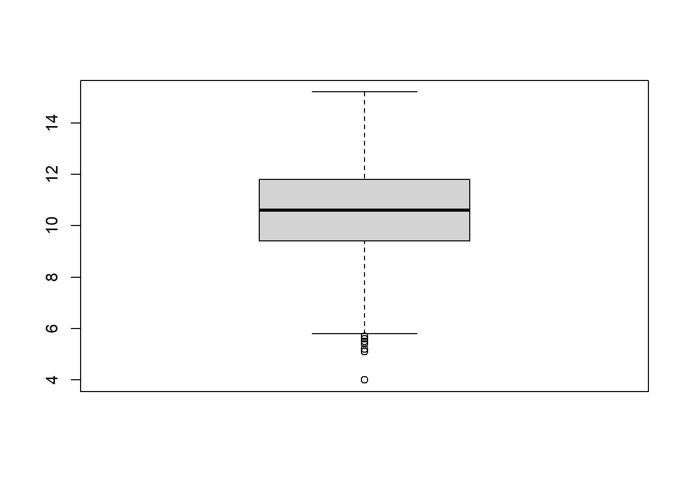
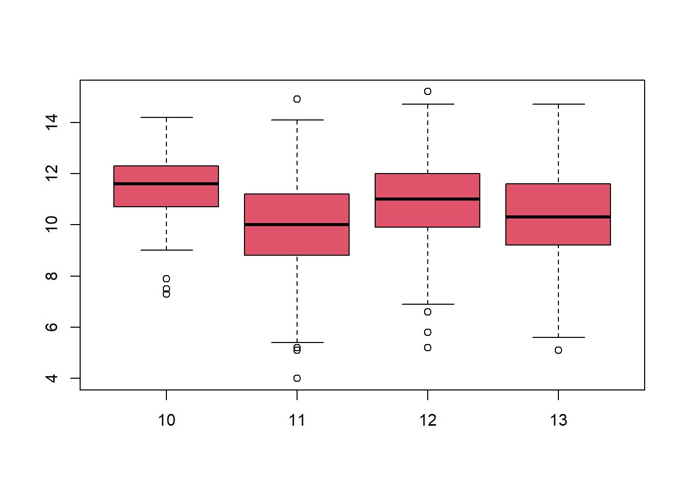

# install.packages("psych")
library("psych")Warning: package 'psych' was built under R version 4.4.3library("writexl")Warning: package 'writexl' was built under R version 4.4.3Lets clean our environment first
# install.packages("psych")
library("psych")Warning: package 'psych' was built under R version 4.4.3library("writexl")Warning: package 'writexl' was built under R version 4.4.3There is an easy way to do this and a more nuanced way to do this. I will cover the nuanced way first.
Let’s say I don’t want to reset my working directory.
The clever way is to assign the directory of interest to a variable so you don’t need to type as much let’s call it wd.
wd<-"C:/Users/auue0001/OneDrive - Sveriges lantbruksuniversitet/slubi/proj/2025/GS_course/website/intro-to-linux-and-R/practicalsexcercise/data/"
wd[1] "C:/Users/auue0001/OneDrive - Sveriges lantbruksuniversitet/slubi/proj/2025/GS_course/website/intro-to-linux-and-R/practicalsexcercise/data/"Now the directory containing our file is located in the variable ‘wd’. When you do a lot of work with R, you want it to be easy to find your files. Use a directory that is easy to find, and a directory structure that makes sense.
For example, organize your files into folders labelled with project names. In this case I want to bring in the dataset Pine_provenance.csv.
We are going to hold all the filenames in this directory in an object called “files”. The function list.files displays the filenames of each file in the directory. I assign the output of this function to the variable”files”. If I don’t assign the output to the variable, the results are simply printed to the screen.
files<-list.files(wd)Let’s look at the files in the directory. Simply type files and press enter: files
It looks like there are multiple files here of different file types. I am only interested in .csv files Let’s modify the output of “list.files” a little bit by giving it the “pattern” argument. We will overwrite the “files” object with a new object of the same name,
files<-list.files(wd,pattern="csv")
filescharacter(0)The easier and less nuanced way to move around the filesystem of your computer using R is to simply reset your working directory This is accomplished via the function setwd().
After I reset the working directory, I can use read.csv without specifying the directory; it’s now implicit (a global option).
setwd("C:/Users/auue0001/OneDrive - Sveriges lantbruksuniversitet/slubi/proj/2025/GS_course/website/intro-to-linux-and-R/practicals/excercise/")
pine <-read.csv("./data/Pine_provenance.csv")The red.table and ’read.csv are two common functions to read data.frames
One shortcoming of vectors and matrices is that they can only hold one mode of data; they don’t allow us to mix, say, numbers and character strings. But data frames can have different models of data
head(pine) treeid female male prov block plot height diameter volume
1 170.1 170 0 10 1 3 12.5 19.6 0.1441
2 170.2 170 0 10 1 3 9.0 11.2 0.0339
3 170.3 170 0 10 1 3 10.7 17.8 0.1017
4 170.4 170 0 10 2 84 11.6 17.4 0.1054
5 170.5 170 0 10 2 84 10.6 17.5 0.0974
6 170.6 170 0 10 2 84 10.7 18.6 0.1111tail(pine) treeid female male prov block plot height diameter volume
909 253.19 253 0 13 5 205 11.0 20.5 0.1387
910 253.20 253 0 13 5 205 9.8 16.7 0.0820
911 253.21 253 0 13 5 205 9.6 17.5 0.0882
912 253.22 253 0 13 5 205 10.4 17.8 0.0989
913 253.23 253 0 13 5 205 11.2 21.4 0.1539
914 253.24 253 0 13 1 30 8.0 16.0 0.0614names(pine)[1] "treeid" "female" "male" "prov" "block" "plot" "height"
[8] "diameter" "volume" sapply(pine,mode) treeid female male prov block plot height diameter
"numeric" "numeric" "numeric" "numeric" "numeric" "numeric" "numeric" "numeric"
volume
"numeric" sapply(pine,class) treeid female male prov block plot height diameter
"numeric" "integer" "integer" "integer" "integer" "integer" "numeric" "numeric"
volume
"numeric" str(pine)'data.frame': 914 obs. of 9 variables:
$ treeid : num 170 170 170 170 170 ...
$ female : int 170 170 170 170 170 170 170 170 170 170 ...
$ male : int 0 0 0 0 0 0 0 0 0 0 ...
$ prov : int 10 10 10 10 10 10 10 10 10 10 ...
$ block : int 1 1 1 2 2 2 2 2 3 3 ...
$ plot : int 3 3 3 84 84 84 84 84 132 132 ...
$ height : num 12.5 9 10.7 11.6 10.6 10.7 11.5 11.3 10.6 12.8 ...
$ diameter: num 19.6 11.2 17.8 17.4 17.5 18.6 18.8 16.8 19.2 20.7 ...
$ volume : num 0.1441 0.0339 0.1017 0.1054 0.0974 ...The subset function requires two arguments: the first is a data frame, the second is the condition that you want to use to create the subset. An optional third argument called select= allows you to specify which of the variables in the data frame you’re interested in.
Example: subset data with the provenance (origin) number < 12, prov10 <- subset(pine, prov<12).
subset data with two conditions: prov.sub <- subset(pine, prov<11, select = c('prov','height') )
Sort data by height: sort(prov.sub$height, decreasing=TRUE).
Display data summary: summary(pine, c('height','diameter')).
We will be using the package “dplyr” to produce some summary tables. This package is particular useful for vectorised operations like grouping and summarising by groups You may need to install this package first. use install.packages("dplyr").
library(dplyr)
Attaching package: 'dplyr'The following objects are masked from 'package:stats':
filter, lagThe following objects are masked from 'package:base':
intersect, setdiff, setequal, unionFirst, we check what the ‘structure’ of the data frame is using str(). This will tell us what kind of variable each column in the data set is considered to be. str(pine)
Notice that treeid is correctly considered a factor variable, but the other factors we want to include in a linear model (female, prov, block in particular) are considered integer (‘int’) variables (round number), which are a special type of numeric variable. We coerce these variables to be factors with as.factor() function:
pine$female <- as.factor(pine$female)
pine$prov <- as.factor(pine$prov)
pine$block <- as.factor(pine$block)Now, we re-check the structure of the data frame to be certain these commands did what we want:
str(pine)'data.frame': 914 obs. of 9 variables:
$ treeid : num 170 170 170 170 170 ...
$ female : Factor w/ 36 levels "170","191","192",..: 1 1 1 1 1 1 1 1 1 1 ...
$ male : int 0 0 0 0 0 0 0 0 0 0 ...
$ prov : Factor w/ 4 levels "10","11","12",..: 1 1 1 1 1 1 1 1 1 1 ...
$ block : Factor w/ 5 levels "1","2","3","4",..: 1 1 1 2 2 2 2 2 3 3 ...
$ plot : int 3 3 3 84 84 84 84 84 132 132 ...
$ height : num 12.5 9 10.7 11.6 10.6 10.7 11.5 11.3 10.6 12.8 ...
$ diameter: num 19.6 11.2 17.8 17.4 17.5 18.6 18.8 16.8 19.2 20.7 ...
$ volume : num 0.1441 0.0339 0.1017 0.1054 0.0974 ...OK, this looks good. Let’s use a few other functions to inspect the data set before proceeding to analysis:
get the names of the levels of ‘female’ in the order they first appear, note these are returned as a factor vector
unique(pine$female) [1] 170 191 192 196 197 198 200 201 202 203 204 205 206 207 210 211 212 213 216
[20] 217 218 219 224 225 226 227 231 232 233 238 239 245 247 251 252 253
36 Levels: 170 191 192 196 197 198 200 201 202 203 204 205 206 207 210 ... 253Get the names of the levels of ‘female’ in sorted order, returned as a vector of character strings
levels(pine$female) [1] "170" "191" "192" "196" "197" "198" "200" "201" "202" "203" "204" "205"
[13] "206" "207" "210" "211" "212" "213" "216" "217" "218" "219" "224" "225"
[25] "226" "227" "231" "232" "233" "238" "239" "245" "247" "251" "252" "253"Check how many individual progeny trees tested from each female parent:
table(pine$female)
170 191 192 196 197 198 200 201 202 203 204 205 206 207 210 211 212 213 216 217
23 29 25 22 25 25 23 22 27 24 27 23 24 25 26 25 27 26 25 25
218 219 224 225 226 227 231 232 233 238 239 245 247 251 252 253
30 24 27 27 23 21 24 29 26 28 27 27 27 26 26 24 # This table may be easier to read as a data frame:
fem.freq <-as.data.frame(table(pine$female))
names(fem.freq) <- c('female','counts')
fem.freq female counts
1 170 23
2 191 29
3 192 25
4 196 22
5 197 25
6 198 25
7 200 23
8 201 22
9 202 27
10 203 24
11 204 27
12 205 23
13 206 24
14 207 25
15 210 26
16 211 25
17 212 27
18 213 26
19 216 25
20 217 25
21 218 30
22 219 24
23 224 27
24 225 27
25 226 23
26 227 21
27 231 24
28 232 29
29 233 26
30 238 28
31 239 27
32 245 27
33 247 27
34 251 26
35 252 26
36 253 24Make a scatterplot of height and volume to check for outliers:
plot(x = pine$volume, y = pine$height,
xlab = "Volume (cubic inches)", ylab = "Height (feet)",
main = " ", col = "blue")
One way to detect unusual data is to consider how far each data point is from the multivariate centroid of the data. That is, find the squared Mahalanobis distance for each data point and then compare these to the expected values of \(χ^2\). \[D^2 = (x-\mu)'\sigma^{-1}(x-u)\], where \(\sigma\) is the covariance of the x matrix.
Large \(D^2\) values, compared to the expected Chi Square values indicate an unusual response pattern. The mahalanobis function in stats does not handle missing data.
This produces a Q-Q (quantle-quantile) plot with the n most extreme data points labeled. We combine the outliers with the data frame and plot it with the outliers. Outliers are highlighted in blue. bad=5 labels the worst five values.
library(psych)
d2 <- outlier(pine[,7:9], bad = 5, na.rm = TRUE)
sat.d2 <- data.frame(pine[,7:9], d2)
pairs.panels(sat.d2,bg=c("lightgreen","blue")[(d2 > 25)+1],pch=21)
We can visualize data with R base functions. The stem function produces simple text histogram.
stem(pine$height)
The decimal point is at the |
4 | 0
5 | 1122245678889
6 | 000234444566777999999
7 | 011111222333344445555555666677777777888888889999
8 | 00000001111111111223333444455555555555555555666666677777788888888888+17
9 | 00000000000001111112222222222222333333333333333344444444555555555555+69
10 | 00000000000000000001111111111111111222222222222222222222222233333333+111
11 | 00000000000000000000001111111111111111111222222222222222222233333333+123
12 | 00000000000000000001111111111111111111111111122222222222222233333333+58
13 | 00001111222333344445555555688888899
14 | 0111122234466779
15 | 22hist(pine$height, col='lightgreen')
plot(pine$height,pine$diameter, col='blue')
plot(density(pine$height))
plot(pine[,7:9] )
boxplot(pine$height)
boxplot(split(pine$height, pine$prov),col=2)
in ggplot: ggsave(“path/to/your/saving/plots/figure_1a.png”, plot = p1, bg =“white”)
or
in base r plot: dev.print (device=jpeg, file=“path/to/your/saving/plots/figure_1a.jpg”, width=par(“din”)[1]*300, res=300, quality=100)
As we plotted bas plots so far so use ‘dev.print’ function
#base r plot
boxplot(split(pine$height, pine$prov),col=2)
dev.print (device=jpeg, file="C:/Users/auue0001/OneDrive - Sveriges lantbruksuniversitet/slubi/proj/2025/GS_course/website/intro-to-linux-and-R/practicals/excercise/fig_1a.png", width=par("din")[1]*300, res=300, quality=100)png
2 For csv
write.csv(df , file = “path/to/your/saving/folder/df.csv”)
For creating excel file
writexl::write_xlsx (test_df, path = “C:/Users/your_username/test_df.xlsx”, col_names = TRUE, format_headers = TRUE)
# writexl::write_xlsx (sat.d2, path = "C:/Users/auue0001/OneDrive - Sveriges lantbruksuniversitet/slubi/proj/GS_course/excercise/test_df.xlsx", col_names = TRUE, format_headers = TRUE)Finally we want to which packages we used in this excercises
R version 4.4.1 (2024-06-14 ucrt)
Platform: x86_64-w64-mingw32/x64
Running under: Windows 11 x64 (build 26100)
Matrix products: default
locale:
[1] LC_COLLATE=English_Sweden.utf8 LC_CTYPE=English_Sweden.utf8
[3] LC_MONETARY=English_Sweden.utf8 LC_NUMERIC=C
[5] LC_TIME=English_Sweden.utf8
time zone: Europe/Stockholm
tzcode source: internal
attached base packages:
[1] stats graphics grDevices utils datasets methods base
other attached packages:
[1] dplyr_1.1.4 writexl_1.5.4 psych_2.5.6
loaded via a namespace (and not attached):
[1] vctrs_0.6.5 nlme_3.1-164 cli_3.6.3 knitr_1.50
[5] rlang_1.1.4 xfun_0.53 generics_0.1.4 jsonlite_1.8.9
[9] glue_1.8.0 htmltools_0.5.8.1 rmarkdown_2.29 grid_4.4.1
[13] evaluate_1.0.5 tibble_3.2.1 fastmap_1.2.0 yaml_2.3.10
[17] lifecycle_1.0.4 compiler_4.4.1 htmlwidgets_1.6.4 pkgconfig_2.0.3
[21] rstudioapi_0.17.1 lattice_0.22-6 digest_0.6.37 R6_2.6.1
[25] tidyselect_1.2.1 pillar_1.11.1 mnormt_2.1.1 parallel_4.4.1
[29] magrittr_2.0.3 tools_4.4.1 main author of the script is “F. Isik”
Quarto enables you to weave together content and executable code into a finished document. To learn more about Quarto see https://quarto.org.
When you click the Render button a document will be generated that includes both content and the output of embedded code. # Read in a data file
———————** End :) **——————–